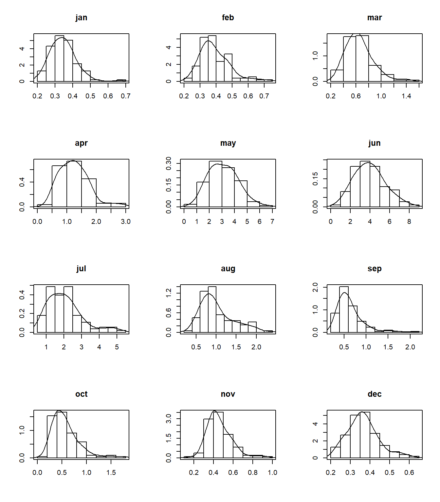
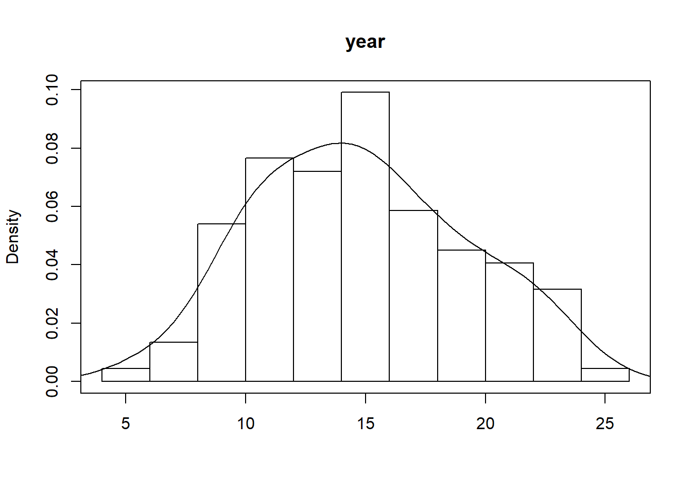

Exercise 1 - Seasonal AR(1) model
Fit a seasonal AR(1) model – i.e., nonstationary time series model to the monthly Colorado River Flow at Lees Ferry.
- Generate 250 simulations each of same length as the historical data.
# Load libraries
libr=c("magrittr","sm","stats","moments")
options(warn=1)
suppressPackageStartupMessages(lapply(libr, require, character.only = TRUE))# import and set up flow data
flow = read.table(
"http://civil.colorado.edu/~balajir/CVEN6833/HWs/HW-3-2018/LeesFerry-monflows-1906-2016.txt")
flow = flow[,2:13] %>% `rownames<-`(flow[,1]) %>%
setNames(.,c("jan","feb","mar","apr","may","jun",
"jul","aug","sep","oct","nov","dec")) %>%
{./10^6} # convert AF to MAF
head(flow,n=1L) # show values## jan feb mar apr may jun jul aug
## 1906 0.244314 0.292534 0.678174 1.20464 3.635101 5.014167 2.95046 1.605086
## sep oct nov dec
## 1906 1.503159 0.739807 0.503006 0.353312tail(flow,n=1L)## jan feb mar apr may jun jul
## 2016 0.360703 0.448837 0.67914 1.099567 2.967581 3.910287 1.342044
## aug sep oct nov dec
## 2016 0.609946 0.485507 0.546633 0.426289 0.345163flow$year = rowSums(flow) # add year in 13th column
par(mfrow=c(4,3)) # plot histogram and density of monthly flow
for(i in 1:12){
hist(flow[,i], freq=FALSE,
main = colnames(flow)[i],xlab = "",ylab = "")
sm.density(flow[,i], add=TRUE)
}
par(mfrow=c(1,1)) # plot histogram and density of anual flow
hist(flow[,13], freq=FALSE,
main = colnames(flow)[13],xlab = "")
sm.density(flow[,13], add=TRUE)
# Get the parameters of the Thomas Fiering Model (12 models, 1 for each transition)
coef1 = coef2 = rep(0,length.out = 12)
coef1[1] = cor(flow[-1,"jan"],flow[-111,"dec"]) # jan - dec
coef2[1] = sqrt((var(flow[,1])) * (1. - coef1[1]*coef1[1]))
for(i in 2:12){ # all the remaining months
coef1[i] = cor(flow[,i],flow[,i-1])
coef2[i] = sqrt((var(flow[,i])) * (1. - coef1[i]*coef1[i]))
}The 12 pairs of coefficients are used to run 250 simulations (synthetic values) that will populate the statistics for the models.
nsim=250 # number of simulations
nyrs=length(flow[,1]) # years
armean=matrix(0,nsim,12) #matrices that store the statistics
arstdev=matrix(0,nsim,12)
arcor=matrix(0,nsim,12)
arskw=matrix(0,nsim,12)
armax=matrix(0,nsim,12)
armin=matrix(0,nsim,12)
# Points where May PDF is evaluated
xeval=seq(min(flow$may)-0.25*sd(flow$may),
max(flow$may)+0.25*sd(flow$may),length=100)
simpdf=matrix(0,nrow=nsim,ncol=100) # Array to store May simulated PDF
## Simulations
for(k in 1:nsim){
nmons=nyrs*12 #number of values to be generated
xsim=1:nmons
r=sample(1:nyrs,1)
xsim[1]=flow[r,1] # Starting point for sim
xprev=xsim[1]
for(i in 2:nmons){
j=i %% 12
if(j == 0) j=12
j1=j-1
if(j == 1) j1=12
x1=xprev-mean(flow[,j1])
x2=coef2[j]*rnorm(1,0,1)
xsim[i]=mean(flow[,j]) + x1*coef1[j] + x2
xprev=xsim[i]
}
#Store simulated values in matrix form, get May values and PDF
simdismon=matrix(xsim,ncol = 12, byrow = TRUE) # filled by row
maysim = simdismon[,5] # Synthetic values for May
simpdf[k,]=sm.density(maysim,eval.points=xeval,display="none")$estimate
# Fill statistics for each month
for(j in 1:12){
armean[k,j]=mean(simdismon[,j])
armax[k,j]=max(simdismon[,j])
armin[k,j]=min(simdismon[,j])
arstdev[k,j]=sd(simdismon[,j])
arskw[k,j]=skewness(simdismon[,j])
}
arcor[k,1]=cor(simdismon[-nyrs,12],simdismon[2:nyrs,1]) #cor dec-jan
for(j in 2:12){ # rest of pairs
j1=j-1
arcor[k,j]=cor(simdismon[,j],simdismon[,j1])
}
}To compare the statistics from the synthetic values with the historical data, they are bound together in the same matrix.
#Compute statistics from the Historical DAta.
obsmean=1:12
obsstdev=1:12
obscor=1:12
obsskw=1:12
obsmax=1:12
obsmin=1:12
for(i in 1:12){
obsmax[i]=max(flow[,i])
obsmin[i]=min(flow[,i])
obsmean[i]=mean(flow[,i])
obsstdev[i]=sd(flow[,i])
obsskw[i]=skewness(flow[,i])
}
for(i in 2:12){
i1=i-1
obscor[i]=cor(flow[,i], flow[,i1])
}
obscor[1]= cor(flow[-nyrs,12], flow[2:nyrs,1])
### bind the stats of the observed data at the top..
armean=rbind(obsmean,armean)
arstdev=rbind(obsstdev,arstdev)
arskw=rbind(obsskw,arskw)
arcor=rbind(obscor,arcor)
armax=rbind(obsmax,armax)
armin=rbind(obsmin,armin)
#write the stats in separate files..
write(t(arcor),file="arcorrs1",ncol=12)
write(t(armean),file="armeans",ncol=12)
write(t(arstdev),file="arstdevs",ncol=12)
write(t(arskw),file="arskews",ncol=12)
write(t(armax),file="armax",ncol=12)
write(t(armin),file="armin",ncol=12)Create boxplots of annual and monthly, mean, variance, skew, lag-1 correlation, minimum, maximum and PDFs of May and annual flows. Comment on what you observe and also on why some of the monthly statistics are not captured.
For fun, replace the simulation of the errors (or innovations) from Normal to Gamma.